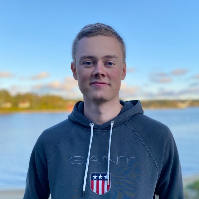

Bilde kommerMarius G. Gundersen
Eksempeltekst: Marius er student ved bachelorprogrammet og har ansvar for [rolle, f.eks. backend-utvikling]. Han er spesielt interessert i [interesseområde] og trives best når han får løse konkrete, praktiske problemer sammen med resten av gruppen. Utenfor studiene liker han å [hobby/fritidsinteresse].